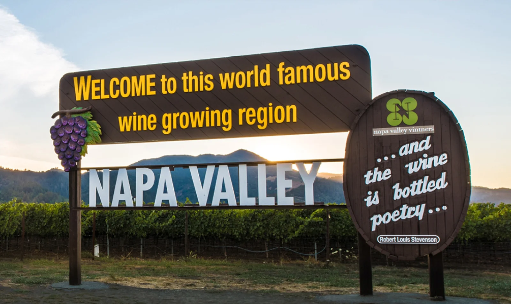

Weinreben im Napa Valley.
1984–1987
In den 1980er Jahren tranken die Amerikaner Bier. Schlechtes Bier. Coors, Budweiser und ähnliche Marken, die für unseren Geschmack eher an Spülwasser erinnerten. Das einzig halbwegs trinkbare Bier hieß „Meister Brau“. „Brau“, weil die Amerikaner mit einem Ä wenig anfangen konnten. Ähnlich wie bei der Restaurantkette „Der Wienerschnitzel“. Der! Das hielten sie offenbar für besonders authentisches Deutsch.
Wein spielte damals in Amerika kaum eine Rolle. Getrunken wurde Bier. Wein war etwas für ein paar ältere Herrschaften, einige Individualisten und die Winzer im Napa und Sonoma Valley. Sonoma liegt näher an der Küste und ist kühler. Deshalb gedeihen dort vor allem Weißweine. Das Napa Valley liegt weiter im Landesinneren und eignet sich besser für Rotwein.
Wir kamen von der Mosel und hatten zumindest eine grobe Vorstellung davon, was Wein sein konnte. Deshalb zog es uns gelegentlich ins Wine Country, besonders dann, wenn uns der Nebel in San Francisco wieder einmal auf den Senkel ging. Die Fahrt dauerte kaum eine Stunde. Dort traf man andere Menschen als in den Bierkneipen. Keine Trinker, sondern Genießer. Man arbeitete sich von Weingut zu Weingut voran und wurde dabei zunehmend besser gelaunt.
Die Weinproben waren kostenlos. Die Winzer wussten, dass die Besucher ohnehin einige Flaschen kaufen würden. Und die Besucher wussten diese Gastfreundschaft zu schätzen. Niemand kam auf die Idee, sich kostenlos zu betrinken. Es herrschte eine entspannte, freundliche Atmosphäre. Man kam ins Gespräch, lernte nette Menschen kennen und entdeckte neue Rebsorten wie Zinfandel, Cabernet Sauvignon oder Chardonnay. Es war eine kleine Gemeinschaft von Weinliebhabern.
Leider verschwand diese Welt irgendwann. Mit dem Geld aus dem Silicon Valley kamen die Besucher in Scharen. Man fuhr sie in Stretchlimousinen durch die Weinberge. Viele kamen aus dem mittleren Westen und hatten von Wein ungefähr so viel Ahnung wie wir von Quantenphysik. Hauptsache teuer. Die kostenlosen Weinproben verschwanden, die Preise stiegen ins Absurde.
Als wir viele Jahre später wieder dort waren, fragte ich einen Winzer, warum seine Weine inzwischen so unverschämt teuer seien. Er antwortete trocken:
„Weil die Kunden das bezahlen.“
Damit war eigentlich alles gesagt.

Zurück in die achtziger Jahre. Wir liebten unsere Fahrten durch die goldgelben Hügel Nordkaliforniens. Mal ins Russian River Valley. Mal über Petaluma nach Westen ins Nicasio Valley. Und wenn die Küste nebelfrei war, weiter über Stinson Beach am Pazifik entlang.
Oft verbanden wir die Touren mit einem Abstecher auf den Mount Tamalpais. Von dort oben hat man einen überwältigenden Blick auf den Pazifik, die Bay und die umliegenden Berge. Manchmal fuhren wir anschließend noch zu den Muir Woods. Dort wachsen die gewaltigen Redwood-Bäume. Einige sind Jahrhunderte, andere sogar Jahrtausende alt. Ein Teil des Waldes blieb von den Holzfällern verschont. Zum Glück.
Was wir an Amerika besonders mochten: In fast jedem Park und Naturschutzgebiet stehen Picknicktische und Bänke. Das nutzten wir ausgiebig. Es gab wenig Schöneres, als an einem warmen Nachmittag mit einem Baguette, etwas Käse und einer guten Flasche Wein in der Sonne zu sitzen und einfach den Tag zu genießen.
Irgendwann wurde es Zeit für die Heimfahrt. Auch die war oft ein Erlebnis. Vorbei an Sausalito, hinauf in die Hügel, durch den Tunnel. Und auf der anderen Seite sahen wir sie wieder in der Abendsonne liegen.
Unsere City.